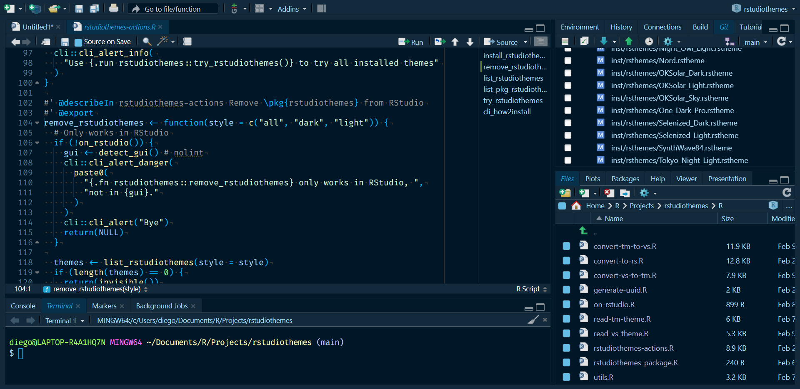
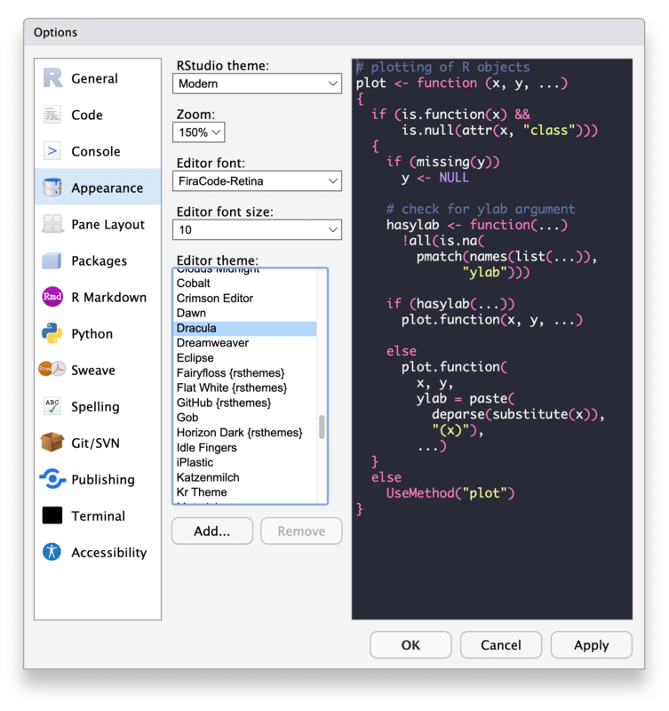

Convert Visual Studio Code/Positron and TextMate themes into RStudio custom themes.
This package provides tools to easily convert Visual Studio Code/Positron and TextMate theme files (.json and .tmTheme formats) into RStudio-compatible .rstheme files. RStudio has supported custom themes in .rstheme format since version 1.2+.
Features
- Convert Visual Studio Code/Positron and TextMate themes into RStudio
.rsthemeformat. - Bidirectional conversion between Visual Studio Code/Positron and TextMate themes.
- Includes ports of popular Visual Studio Code/Positron themes ready to use in RStudio.
- Organize and manage custom themes in a reproducible way.
- Integrates with R tooling for easier installation and testing.
Built-in themes
This package includes ports of several popular Visual Studio Code/Positron themes, ready to use in RStudio. Simply use the install_rstudiothemes() function to install them into your RStudio environment:
rstudiothemes::install_rstudiothemes()
#> ✔ Installed 32 themes
#> ℹ Use `rstudiothemes::list_rstudiothemes()` to list installed themes
#> ℹ Use `rstudiothemes::try_rstudiothemes()` to try all installed themes
rstudioapi::applyTheme("Winter is Coming Dark Blue")
Available themes include popular choices such as Tokyo Night, Night Owl, Winter is Coming, SynthWave 84, Nord, and many others:
rstudiothemes::list_rstudiothemes(list_installed = FALSE)
#> [1] "Andromeda" "ayu Dark"
#> [3] "ayu Light" "Catppuccin Latte"
#> [5] "Catppuccin Mocha" "cobalt2"
#> [7] "CRAN" "Dracula2025"
#> [9] "GitHub Dark" "GitHub Light"
#> [11] "JellyFish Theme" "Matcha"
#> [13] "Matrix" "Night Owl"
#> [15] "Night Owl Light" "Nord"
#> [17] "OKSolar Dark" "OKSolar Light"
#> [19] "OKSolar Sky" "One Dark Pro"
#> [21] "Overflow Dark" "Overflow Light"
#> [23] "Panda Syntax" "Selenized Dark"
#> [25] "Selenized Light" "Skeletor Syntax"
#> [27] "SynthWave 84" "Tokyo Night Light"
#> [29] "Tokyo Night Storm" "Tokyo Night"
#> [31] "Winter is Coming Dark Blue" "Winter is Coming Light"We also distribute all our themes in a single .zip file at https://dieghernan.github.io/rstudiothemes/dist/rstudiothemes.zip. Unzip and install using the RStudio IDE interface.
Migrating an existing theme
You can convert any Visual Studio Code/Positron or TextMate theme to RStudio format. Here’s how:
- Use your favorite Visual Studio Code/Positron or TextMate theme file or the URL of an online theme.
- Use the
convert_to_rstudio_theme()function to convert and install it:
rstudiothemes::convert_to_rstudio_theme(
"<path/to/file>",
apply = TRUE,
force = TRUE
)Alternatively, install the .rstheme file via the RStudio UI:
Tools > Global Options > Appearance > Add

Bidirectional conversion between Visual Studio Code/Positron and TextMate themes
The package also includes the conversion functions convert_vs_to_tm_theme() and convert_tm_to_vs_theme(), allowing you to convert themes in both directions if needed.
Creating themes from scratch
rstudiothemes does not provide a built-in theme editor, but you can create your own themes from scratch using the following tools:
- TextMate
.tmTheme: https://tmtheme-editor.linuxbox.ninja/. Also see the official RStudio documentation on creating themes. - Visual Studio Code
.json: See the official documentation on creating color themes.
Contributing
Contributions are welcome! To contribute to this project:
- Open an issue to discuss your ideas or proposed changes.
- Fork the repository and create a feature branch.
- Submit a pull request with clear commit messages and descriptions.
Citation
Hernangómez D (2026). rstudiothemes: Create RStudio Themes from Visual Studio Code, Positron and TextMate Themes. doi:10.32614/CRAN.package.rstudiothemes, https://dieghernan.github.io/rstudiothemes/.
A BibTeX entry for LaTeX users:
@Manual{R-rstudiothemes,
title = {{rstudiothemes}: Create {RStudio} Themes from {Visual Studio Code}, {Positron} and
{TextMate} Themes},
doi = {10.32614/CRAN.package.rstudiothemes},
author = {Diego Hernangómez},
year = {2026},
version = {1.0.0},
url = {https://dieghernan.github.io/rstudiothemes/},
abstract = {Create and install RStudio themes derived from Visual Studio Code, Positron and TextMate themes. Provides functions to convert between TextMate and Visual Studio Code or Positron themes, as well as ports of several Visual Studio Code themes.},
}